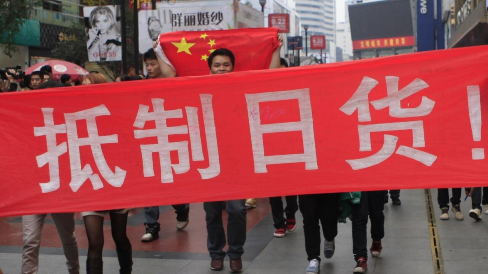
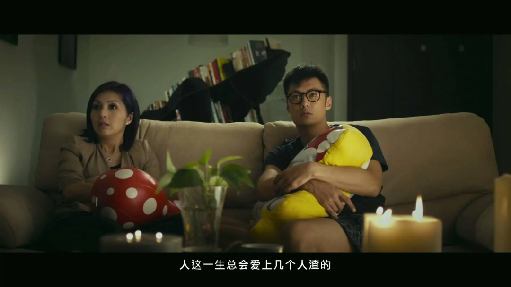
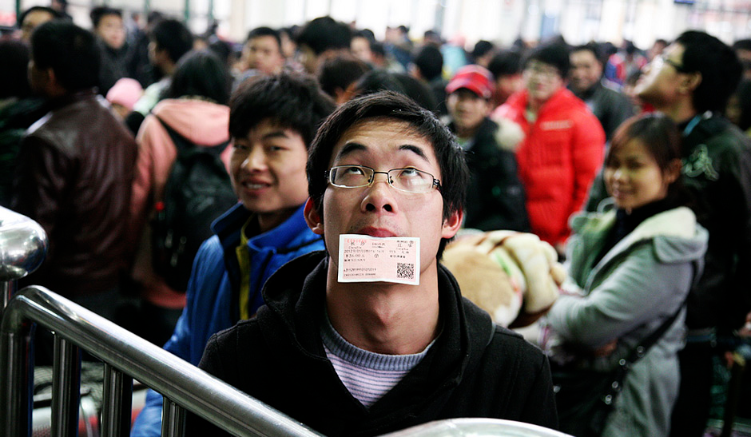

2012过去十年了，你幸福吗？
“你幸福吗?”“我姓曾”
2011年底，英国摄影师菲斯克来到中国，记录了年轻人在纸板上写下的未来期许。
17岁的甘肃小伙周亮，希望人们能摘下有色眼镜，重新打量自己。
22岁的茶馆服务员苏东平则认为社会风气开始偏向拜金主义。
来到上海打工的27岁酒店服务员胡林栓，租住在城中村，烦躁当时的生存环境。
刚毕业的19岁云南高中生徐爱华认为，中国经济会继续向前发展。
在青春梦想的躁动与时间的考量中，2011年很快就过去。
代表着未知与未来的2012年，开始了。
动荡的2012
2012年，互联网已经全面接入生活，但尚处于开荒期，环境野蛮。
1月15日，麦田的一篇《人造韩寒：一场关于“公民”的闹剧》，提出韩寒是“包装出来的”“文章有代笔”“出道靠拼爹”三点质疑。
面对质疑，韩寒在16日凌晨发表博文《小破文章一篇》，他在文中写道：“我的每一个字都是我亲手写下的。”还表示愿意悬赏2000万元征集代笔证据。
随后，双方就自己的论点扯皮，事情最后草草收场，网络舆论威力初显。
互联网上的战争也不止这一场。
2012年8月，奇虎360推出综合搜索引擎，并悄悄把主页的默认搜索从百度换成了自家搜索。
随后，百度展开反制措施，通过360搜索导入的部分网页会跳转到百度首页，并以不正当竞争为由状告360。最终，360败诉，赔偿百度45万元人民币。
2012年9月10日，一则消息，彻底点燃了网络舆论。
日本用20.5亿元收购钓鱼岛
互联网第一次开始向我们展示它影响现实的爪牙，反日游行开始。
人们举着“誓死保卫钓鱼岛”“打倒日本帝国主义”的横幅冲上大街。
并开始自发地抵制日货和日本文化。

但随着反日浪潮不断发酵，事情的走向开始变了味，游行逐渐向暴行靠拢。
多地的日料店，以及索尼、卡西欧等日本品牌的门店，还有丰田、本田等日系车4S店遭遇了打砸抢。
·为了保护爱车，有车主在车尾贴上爱国车贴
西安市民李建利驾驶着自己的卡罗拉轿车，被游行的人群围在道路中央，进退不得。
21岁的建筑工人蔡洋，盯准了卡罗拉是日本品牌，开始打砸汽车。
看到爱车被砸，李建利出来阻拦，被已经杀红眼的蔡洋用U型锁击穿了头骨。
此事让人们的狂热散去，理性重回高地。
而在互联网之外，自然的残酷，则周而复始地给文明蒙上阴翳。
2012年6月30日，天津蓟县莱德商厦因空调外机着火发生火灾，而火灾发生时，商场负责人怕丢东西，将商厦一楼的电动卷帘门封闭了。
烈火吞噬了10人的生命，另有16人被烧伤。
据目击者称，当时有一名男子想拼死冲入火场，因为他的妻子和孩子在里面。在因安全原因被阻拦进入后，男子急得昏了过去。
当火光散去，洪水漫灌而来。
2012年7月21日，北京遭遇61年来最强暴雨和洪涝灾害，城区平均降雨量达到231毫米，最大降雨量出现在房山区河北镇，高达460毫米。
洪水冲毁了汽车和民房，也带走了79人的生命。
2012年，除了灾难，同样有太多遗憾。
2012年3月17日，抑郁症患者走饭在金陵科技学院宿舍里自缢身亡。
其用时光机功能提前发布的告别微博迅速在微博上传播开来。
受此影响，抑郁症开始得到广泛关注。
直到今年5月29日，还有人在这条微博下留言。
·现在，这条微博因内容违反相关法规已无法留言
8月7日进行的伦敦奥运会110米栏预赛，刘翔带伤出战，在跨越第一个栏架时摔倒，只能一瘸一拐地蹦过终点，这也是刘翔参加的最后一届奥运会。
2012年NBA总决赛，俄克拉荷马年轻的雷霆三少不敌三巨头热火，4比1出局，梦断美航球馆。
2012年，死亡，悄然带走一些我们熟悉的名字。
周星驰曾经的女友罗慧娟因患胰腺癌在新加坡不幸离世，年仅46岁。
2月11日，演唱过《我会永远爱你》的惠特尼·休斯顿，因服药过量导致心脏病发滑入浴缸溺水而意外逝世，终年48岁。

2012年也不全是遗憾，新希望，同样在酝酿。
新的语言，新的希望
2012年，工信部尚未向社会颁发4G运营牌照，快手、抖音、斗鱼等平台还没出现。
互联网处于博客和短视频时代的交叉节点，贴吧、微博如日中天，不断孵化着新语言。
2011年10月底，在李毅贴吧与雷霆三巨头吧的一次对骂中，雷霆吧称李毅吧的成员是“屌丝”，这一侮辱性称呼被李毅吧成员欣然接受并快速推广。
屌丝，成为2012年的年度热词。
与屌丝一同出现的新语言，还有“吃货、高富帅、重口味、躺着也中枪”等。
人类，在突破种群极限的道路上越走越远。
伦敦奥运会男子100米决赛上，博尔特以9.63秒的成绩创造了新的奥运会纪录。

10月11日，莫言获诺贝尔文学奖的消息传回国内。
兴奋的人们冲进书店，把《丰乳肥臀》《蛙》等莫言的著作抢购一空，以至于商店不得不提醒读者没货了。
2012年，进步的科技，开始重塑人们的娱乐生活。
12月14日，iPhone 5在中国大陆上市前夜，果粉从晚上7点就开始排队，只为能第一时间拿到爱机。
坚定的果粉对记者说，不管多少代，苹果出了她就来买。
《滑雪大冒险》和《神庙逃亡》是最火的手机游戏，雪山或是神庙，总要选一个奔跑。
青年们的耳机里，则播放着许嵩的《幻听》。

·“如今一个人听歌总是会觉得失落，幻听你在我的耳边轻轻诉说”
什么都能一键播放的快播，是市面上最好用的视频软件。
不习惯操作电脑的人们，可以在电视上观看引进海外模式的中国综艺节目。
比如《中国好声音》。
盲选的形式让它迅速蹿红，而吉克隽逸等实力唱将们，让人们觉得华语乐坛重回巅峰指日可待。

因为《宫锁心玉》爆红的杨幂，是当红女星，一年内参演9部电影、4部电视剧。
·横空出世
在中国观众的银幕上，也不光有杨幂，各种类型的大片也争奇斗艳。
李安给大家带来《少年派的奇幻漂流》。
"新锐”导演徐峥则凭借《泰囧》12.67亿的票房获得了华语电影票房冠军。
文艺青年们则热衷于《春娇与志明》。

而所有的这些希望，都将在年底被一种叫“回家”的希望覆盖，进而汇聚成一场浩荡的迁徙。
2012年春运。

1月8日，长沙站迎来了首波返乡客流，在候车室里，一位母亲在嘈杂的候车室里亲吻自己的孩子。
在人群的涌动中，回家的希望发出炸响。
央视在2012年春节前后，播出了公益广告《回家篇》，记录了贵州农民工批量骑摩托车回家过年的全程。

镜头下的返乡者们，拥有着怎么化妆都画不出来的真实粗粝。

而如果说整个2012年，民众最关心，社会影响力最大的事件，则是末日预言。
末日恐慌症候群
2012年12月21日下午3时14分35秒是世界末日的预言在当时人尽皆知。
而在“末日”尚未来临之前，末日已经在人们心中预演，末日风潮席卷神州大地。
在微博和豆瓣上，人们给世界留下自己的“三行遗书”。
有个叫“猪猪壳”的老哥字里行间爱到疯狂，可惜QQ秀都没置办一套。
较为含蓄的网友则希望用一个拥抱跟世界告别。
有的大学生则用2012年天价切糕事件的黑色幽默事件渲染末日氛围。
眼看着人心惶惶，班也上不好，成都的一家公司索性搞了个“末日假期”，让大家陪陪亲人。
与以上躺平党不同，有的狂人当时想逆天改命对抗末日。
浙江义乌，有个叫杨宗福的商人，在义乌后宅灶村的一个山坡上兴高采烈地向世界展示了他的新发明——中国诺亚方舟。
据他讲述，这款耗资150万打造的的诺亚方舟，从50米山坡上滚下来毫发无伤，能抵御1700℃的高温，物资足够让一家三口安全生存10个月。
说完，杨老板还亲自上阵测试了一把，坐着圆球从山上滚下。
眼看杨老板毫发无伤，中国诺亚方舟的名头打响。
订单蜂拥而至，短短几个月，杨宗福就接到了26个订单，甚至还有从新西兰发来的订单，买主还多次询问能不能在末日前收到货。
一位来自山西的煤老板一口气订了15台，称要让亲朋好友都在末日平安。
面对末日预言，还有人及时行乐，疯狂消费。
43岁的重庆木匠王明，听到末日消息后，快速花光了11万积蓄。
还有人在末日没来之前，就已经陷入自我毁灭中。
19岁的陈某与18岁的张某是一对表兄弟，在网吧上网时，他们看到一条“2012年地球将要毁灭，世界末日就要来临”的信息，认为反正世界就要毁灭了，为啥不去抢钱爽爽。
随后，在不到两个月里，二人飞车抢劫12起，抢完钱就去洗脚城、网吧挥霍。最终，二人没等来末日，而是被警方抓获，喜提“银手镯”一套。
而更广大的老百姓们，面对末日的反应就是抢购必需品。
双流县九江街道的集市上，卖蜡烛和火柴的摊位十分火爆，顾客一买就是好几包。
有人趁末日传说浑水摸鱼，发了笔横财。
当时的淘宝网，几乎所有卖紧急装备的商家，都管自己的产品叫“末日装备”“末日逃生包”等。因为只要沾上“末日”俩字，商品销量就可以直接翻倍。
在福建，多人散发“世界末日”传单，说“老天爷要下凡了，我这里有一张符，你拿了就能避灾”，借机兜售避难符。
总之，面对末日，人们极尽所能地想着增加自己生存几率的办法。
而等到末日真的来临时，人们似乎并没有想象中那般疯狂。
2012年12月21日下午，是一个平静的下午，人们已难以回想起末日的那个下午自己在干吗。
在我询问的几个朋友里，只有一位朋友回想起末日那天自己在月考。
时间滚滚向前，人们短暂地为末日恐慌，又再度投入持续性的生活里。
2012年，也随着末日预言的不攻自破走向了尾声。
2012年10月8日，CCTV组织了一档叫“你幸福吗”的社会调查，面对镜头，在新疆采棉花的大娘觉得给小孩攒点钱是最大的幸福。
北京刚分手的小伙觉得当时的自己不幸福。
而一位打工者，则用振聋发聩的声音结束了荒诞的2012。
我姓曾。
这一回答看似欢乐，但却能普遍反应当时的社会状态。
人们面对幸不幸福这一抽象问题，都是思考了一会才给出答案，仿佛从来没听过“幸福”这个词汇似的，甚至还出现了理解偏差。
作为经验主义的践行者，经历过不幸，才能准确的理解幸福，就像挨过饿才知道啥是吃饱了。
而最大的幸福，就是对“幸福”这个词汇的陌生。
当人人都熟悉何为“幸福”时，那不幸，便泛滥成灾。